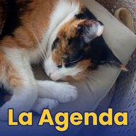

† = dirección tomada de conciertosensevilla.es (fuente secundaria).
Los datos salen de las webs oficiales de cada sala (etiqueta oficial) y de agregadores autorizados (etiqueta agregador, fuente secundaria). Las categorías están estimadas por palabras clave y pueden fallar. Si no consta el precio o la dirección, aparece como pendiente: no se rellena de memoria. «Fechas aprox.» significa que viene de un rango; confirmadlo en el enlace. Los «Marcados» se comparten con quien tenga acceso a la página.